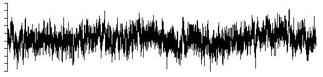
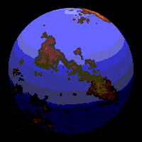
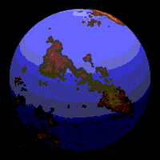
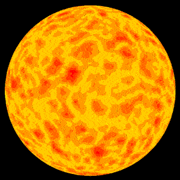

Generating noise with different power spectra laws
Written by Paul Bourke
October 1998
There are many ways to characterise different noise sources, one is
to consider the spectral density, that is, the mean square fluctuation
at any particular frequency and how that varies with frequency.
In what follows, noise will be generated that has spectral densities
that vary as powers of inverse frequency, more precisely, the power
spectra P(f) is proportional to 1 / fbeta for beta >= 0.
When beta is 0 the noise is referred to white noise, when it is 2 it
is referred to as Brownian noise, and when it is 1 it normally referred to
simply as 1/f noise which occurs very often in processes found in nature.
White noise, beta = 0

Brownian noise, beta = 2
Note: Brownian noise is most easily generated by integrating white noise.
If one plots the log(power) vs log(frequency) for noise with a
particular beta value, the slope gives the value of beta. This leads to
the most obvious way to generate a noise signal with a particular beta.
One generates the power spectrum with the appropriate distribution and
then inverse fourier transforms that into the time domain, this technique
is commonly called the fBm method and is used to create many natural looking
fractal forms.
The basic method involves creating frequency components which have a
magnitude that is generated from a Gaussian white process and scaled
by the appropriate power of f. The phase is uniformly distributed on
0, 2pi. See the code at the end of this document for more precise details.
There is a relationship between the value of beta and the fractal dimension
D, namely, D = (5 - beta) / 2
Examples
The following are examples of noise time series generated as described.
They were all based upon the same initial seeds and therefore have the same
general "shape".
beta = 1

beta = 1.5
beta = 2, Brownian noise (random walk)
beta = 2.5
beta = 3
C Source
A straightforward C program is given here that
generates a noise series with a particular beta value.
The RandomGaussian function returns a Gaussian white noise process
with zero mean and unity standard deviation. RandomUniform returns
a uniformly distributed noise process distributed between 0 to 1.
Deterministic 1/f noise
Written by Paul Bourke
February 1999
Listen to deterministic noise: QuickTime
1/f noise can be created using random noise generators
but it can also be producted using deterministic functions.
One such method is a finite difference equation proposed
by I. Procaccia and H. Schuster. It is simply
xt =
(xt-1 + xt-12) mod 1
A section of the time series is illustrated below.
The power spectra is shown below.
References
Schuster, H.G. Deterministic Chaos - An Introduction. Physik verlag, Weinheim, 1984
Procaccia, I. and Schuster, H.G.
Functional renormalisation group theory of universal 1/f noise
in dynamical systems. Phys Rev 28 A, 1210-12 (1983)
Modelling fake planets
Written by Paul Bourke
October 2000
Greek version (Uses iso-8859-7 character set)
The following describes a method of creating realistic looking planetary
models. The technique has been known for some time and is both an elegant
and non-intuitive way of creating such fractal surfaces.
The exact approach chosen here was to enable the
models to be used in a variety of rendering packages, as such it is based
upon facet approximations to a sphere. The same approach can readily be
modified to deal with other data structures.
|
The basic approach is as follows: start is a sphere, on each iteration
choose a random vector, let this define a plane passing through the center
of the sphere, increase the elevation of all points on one side by some
small amount, decrease the elevation of all points on the other side by
the same small amount, .... , repeat lots of times.
In terms of the implementation, the test for whether a point on the surface
is on one side of the plane or the other just involves a dot product
between the unit vector to the point on the surface and the unit normal.
Note also that since the vector to the points on the surface doesn't
change, the heights can be accumulated and the actual points transformed
at the end of the iterative process.
|
|
The sequence is illustrated below.
0
This is a the initial perfectly smooth sphere, in this particular case
there are about 33000 triangular polygons.
|
|
1
In the first iteration a random plane is chosen by choosing a random
normal vector (the plane passes through the center of the sphere).
The points on one side are raised, those on the other side are lowered.
A Mars colour map is mapped onto height in this example.
|

|
2
The second iteration sees the process applied to a second randomly chosen
plane. There are now 3 different height values on the surface of the
sphere.
|

|
3
The third iteration.
|
|
10
The tenth iteration and things don't look terribly promising.
|
|
100
The one hundredth iteration and suddenly it is starting to look interesting.
Note that as with many fractal techniques, the surface is completely specified
by one number, that is, the original random number seed. A new surface is
created by changing the seed, old landscapes can be regenerated if their
seed is known.
|

|
1000
At one thousand iterations the line structure still apparent at 100
iterations has gone. In this case there isn't much point continuing
because of the relatively low resolution of the sphere tessellation.
|

|
Other examples
The above example and the ones that follow were created in an interactive
OpenGL environment. While this leads to the ability to fly around and explore
the models, it does restrict the rendering quality. It will be left to
the reader to create more stunning images using their favorite rendering
package.


Mirror effect
An artifact of this method is that the planets have a mirror symmetry.
A contour at a high elevation on one side of the planet will have a matching
contour on the opposite side of the planet. In particular, if the planet
is flood filled to some level, the outline of the land on one side will
look the same as the outline of the water on the other side. This is
clearly seen in the example below, the ocean on the left matches (given
some mirror axes) the land on the opposite side of the planet as shown
on the right.
 

|
This artifact is
rarely noticed, if it is a problem then the restriction above where
the plane intersects the center of the planet can be lifted.
One not only randomly chooses a normal but also a scalar offset.
The usual approach is to displace the plane by the random offset
along the direction of the normal. This also seems to generate
better looking planets, the downside is that it takes more
iterations to reach a particular level of resolution.
|

|


Source code
An example application that implements the above is provided as simple
OpenGL based program written in C:
planet.c and
planet.h. These should form a good basis for you own experimentation.
For example, depending on the ability of your graphics card you might like to
increase the maximum sphere resolution, test out more realistic colour
maps, add cloud cover, etc. I'd be interested in seeing imagery resulting
from this exploration. This code also supports frame sequential stereo
if your OpenGL card supports it.....
To find out about the basic operation of this program, after compiling
it try "planet -h", this will give the command line options. The right
mouse button (aka GLUT) will give a bunch of randomly organised options.
Contribution by Julien Amsellem for 3DStudioMax
Planar version
A version of the above can also be performed on the plane, that is, on each iteration
choose two random points on the plane forming a cut line.
The side of the plane on the left of the line is raised and the side on the right of
the plane lowered. Performing this operation for various iteration counts is illustrated
below where the height is mapped onto a grey scale.
10 iterations
|
100 iterations
|
1000 iterations
|
100,000 iterations
|
Fractal Landscapes
Written by Paul Bourke
January 1991
Introduction
Fractal landscapes are often generated using a technique called spatial
subdivision. For magical reasons this results in surfaces that are similar in
appearance to the earth's terrain.
The idea behind spatial subdivision is quite
simple. Consider a square on the x-y plane,
- (1) split the square up into a 2x2 grid
- (2) vertically perturb each of the 5 new vertices by a random amount
- (3) repeat this process for each new square decreasing the perturbation each iteration.
The controls normally available when generating such landscapes are:
-
* A seed for the random number generator. This starts the random number
generator and means that the same landscape can be recreated by remembering
only one number.
-
* A roughness parameter. This is normally the factor by which the perturbations
are reduced on each iteration. A factor of 2 is the usual default, lower
values result in a rougher terrain, higher values result in a smoother
surface.
-
* The initial perturbation amount. This set the overall height
of the landscape.
-
* Initial points. It is often desirable to specify some initial points,
normally on the corners of the initial rectangles. This provides some
degree of control over the macro appearance of the landscape.
-
* Sea level. This "flood" the terrain to a particular level simulating
the water level.
-
* Colour ramp. This is used for shading of the terrain surface
based on the height. Normally two or three colours are defined for
particular heights, the surface at other heights is linearly interpolated
from these points.
-
* Number of iterations. This results in the density of the mesh
that results from the iteration process.
FracHill
An application that creates fractal landscapes has been written by myself
called FracHill.
It fully implements fractal terrain generation including
control over
(x,y) range,
sea colour, background colour, terrain colour ramp,
lighting, rendering options,
camera attributes,
grid density,
9 initial points,
height variation,
and roughness.
This application runs on any Macintosh computer with colour QuickDraw.
It supports image saving to PICT files and colour printing through the
standard Apple printing mechanism.
It also has the ability to geometrically morph between any two terrain
models, images or models can be automatically exported and formed into
animation sequences.
FracHill was primarily written as a creator of terrain models for other
3D modelling and rendering packages and thus provides
the ability to export the land surface in a number of CAD formats so that it
can be imported into 3D modelling packages.
At the time of writing it exports to the following file formats
- DXF
- Super3D
- Radiance
- RayShade
- POV-Ray
- points
The following shows a terrain surface at various grid resolutions from 2x2 to
32x32.
In addition to wireframe views, FracHill performs other types of rendering
including
- hiddenline
- coloured
- shaded
Some examples directly from FracHill are shown below
A well known artefact (bug) with terrains generated this way is the
appearance of "seams" or "creases". These generally occur along the edges
of the geometry associated with early iterations.
A clear example is shown below, notice the crease in the bottom left
part of the terrain highlighted by the shadow zone:
References
Heinz-Otto and Dietmar Saupe,
The Science of Fractal Images,
Springer-Verlag
The Synthesis and Rendering or Eroded Fractal Terrains,
F.Kenton Musgrave, Craig E Kolb, Robert S. Mace,
IEEE Computer Graphics & Applications
Frequency Synthesis of Landscapes (and clouds)
Written by Paul Bourke
March 1997
Frequency synthesis is based upon the observation that many "natural"
forms and signals have a 1/fp
frequency spectra, that is, their spectra
falls off as the inverse of some power of the frequency where the power is
related to the fractal dimension.
This leads naturally to a method of generating such fractals:
- Generate a random (white noise) signal.
- Transform this into the frequency domain.
- Scale the resulting spectra by the desired 1 / fp function.
- Inverse transform.
In what follows this technique will be applied to 2 dimensional data,
as will be seen, these look like terrain models when viewed as 3 dimensional
models and clouds when viewed as 2 dimensional images.
To illustrate the process consider firstly a white noise signal in the
spatial domain. To illustrate each stage both the image and 3D model will be
shown together, the example below will use a 256 x 256 grid.
The next stage is to apply a fast Fourier transform to transfer the
image into the frequency domain. For white noise this essentially
looks like another noise field, the following shows the magnitude
but remember each frequency component is a complex number, it has
a real and imaginary part
Now we apply the 1/f filter. Note that the DC value is in the center
of the image. This filter is applied to both the real and imaginary
values of the harmonics in the frequency domain.
And lastly we transform back into the spatial domain with an inverse
Fourier transform.
An important attribute of these images/models is
that they tile perfectly, this is a direct result of the Fourier
method which assumes periodic bounds.
The following is a 2 x 2 tiling of the cloud-like image above,
this suggests a way of creating tiled textures....but that's another
story.
There are a number of ways of controlling how rough or smooth the
surface is, the most obvious is to vary the power relationship.
The following two images show the same surface as that used earlier
(same random number sequence) but with a 1/f power of 1.8 and 2.4
respectively.
As with other fractal generation systems a particular image or surface
is completely characterised by one number, namely the random number seed.
Bodies of water can be introduced by "flooding" the 3D models to
some level. This is done simply by setting the height dimension of
all grid cells to the flood level if the original height is less than
the flood level.
And finally, a cloud background to a thin gold sheel with a cutout
made from a fractal by Roger Bagula.

Gallery of images created with
Voxel World
By Dmytry Lavrov
Voxel world is a terrain and volumetric atmosphere/cloud rendering program being developed
by Dmytry Lavrov. The volumetric approach to clouds and light interaction can create
compelling and realistic atmospheric effects.
|
|
|
|
|
|
|
|
|
|
Mars - Mariner Valley
|
Mars - Olympus Mons
|
Mountain snow
|
Mars - Dust storm
|
|
|

|
Perlin Noise and Turbulence
Written by Paul Bourke
January 2000
Introduction
It is not uncommon in computer graphics and modelling to want to
use a random function to make imagery or geometry appear more natural looking.
The real world is not perfectly smooth nor does it move or change
in regular ways. The random function found in the maths libraries of
most programming languages aren't always suitable, the main reason
is because they result in a discontinuous function.
The problem then is to dream up a
random/noisy function that changes "smoothly". It turns out that there
are other desirable characteristics such as it being defined everywhere
(both at large scales and at very small scales) and for it to be band
limited, at least in a controllable way.
The most famous practical solution to this problem came from Ken Perlin
back in the 1980's. His techniques have found their way in one form or another
into many rendering packages both free and commercial, it has also found
its way into hardware such as the MMX chip set. At the bottom of this
document I've included the original (almost) version of the C code as
released by Ken Perlin and on which most of the examples in the document
are based.
The basic idea is to create a seeded random number series and smoothly
interpolate between the terms in the series,
filling-in the gaps if you like. There are
a number of ways of doing this and the details of the particular
method used by Perlin need not be discussed here. Perlin noise can
be defined in any dimension, most common dimensions are 1 to 4.
The first 3 of these will be illustrated and discussed below.
1 Dimensional
A common technique is to
create 1/fn noise which is known to occur often in natural
processes. An approximation to this is to add suitably scaled harmonics
of this basic noise function.
For the rest of this discussion the Perlin noise functions will be
referred to as Noise(x) of a variable x which may
a vector in
1, 2, 3 or higher dimension. This function will return a real (scalar) value.
A harmonic will be Noise(b x) where "b" is some positive number
greater than 1, most commonly it will be powers of 2.
While the Noise() functions can be used by themselves, a more common
approach is to create a weighted sum of a number of harmonics of
these functions. These will be refered to as NOISE(x)
and can be defined as
Where N is typically between 6 and 10.
The parameter "a" controls how rough the final NOISE() function will be.
Small values of "a", eg: 1, give very rough functions, larger values give
smoother functions. While this is the standard form in practice it
isn't uncommon for the terms ai and bi to be
replaced by arbitrary values for each i.
The following shows increasing harmonics of 1 dimensional Perlin noise
along with the sum of the first 8 harmonics at the bottom. In this case
a and b are both equal to 2. Note that
since in practice we only ever add a limited number of harmonics, if we
zoom into this function sufficiently it will become smooth.
2 Dimensional
The following show the same progression but in two dimensions.
This is also a good example of
why one doesn't have to sum to large values of N, after the 4th
harmonic the values are less than the resolution of a grey scale image
both in terms of spatial resolution and the resolution of 8 bit grey scale.
0 (1)
|
1 (2)
|
2 (4)
|
3 (8)
|
4 (16)
|
Sum
|
As earlier, a and b are both set to 2 but
note that there are an infinite number of ways these harmonics could
be added together to create different effects. For example, if in the
above case one wanted more of the second harmonic then the scaling of that
can be increased. While the design of a particular image/texture isn't
difficult it does take some practice to become proficient.
3 Dimensional
Perlin noise can be created in 3D and higher dimensions, unfortunately it is
harder to visualise the result in the same way as the earlier dimensions.
One isosurface of the first two harmonics are shown below but it hardly tells
the whole story since each point in space has a value assigned to it.
0 (1)
|

1 (2)
|
Perhaps the most common use of 3D Perlin noise is generating volumetric
textures, that is, textures that can be evaluated at any point in space
instead of just on the surface. There are a number of reasons why this
is desirable.
It means that the texture need not be created beforehand but can
be computed on the fly.
There are a number of ways the texture can be animated.
One way to to translate the 3 dimensional point passed to the Noise()
function, alternatively one can rotate the points. Since the 3D texture
is defined everywhere in 3D space, this is equivalent to translating or
rotating the texture volume.
The exact appearance of the texture can be controlled by either varying
the relative scaling of the harmonics or by adjusting how the scalar from
the Perlin functions is mapped to colour and/or transparency.
It gets around the problem of mapping rectangular texture images
onto topologically different surfaces. For example, the following texture
for a sun was created using 3D noise and evaluating the points using the
same mapping as will be used when the texture is mapped onto a sphere.
The result is that the texture will map without pinching at the poles and
there will not be any seams on the left and right.
Source code
The original C code by Ken Perlin is given here:
perlin.h and perlin.c.
Applications
The above describes a way of creating a noisy but continuous function.
In normal operation one passes a vector in some dimension and the function
returns a scalar. How this scalar is used is the creative part of the
process. Often it is can be used directly, for example, to move the
limbs of virtual character so they aren't rigid looking. Or it might be
used directly as the transparency function for clouds. Another fairly
common application is to use the 1D noise to perturb lines so they look
more natural, or to use the 2D noise as the height for terrain models.
2D and 3D perlin noise are often used to create clouds, a hint of this
can be seen in the sum of the 2D Noise() functions above.
When the aim is to create a texture the scalar is used as an index into
a colour map, this may either be a continuous function or a lookup table.
Creating the colour map to achieve the result being sought is a matter
of skill and experience. Another approach is to use NOISE() functions
as arguments to other mathematical functions, for example, marble effects
are often made using cos(x + NOISE(x,y,z)) and mapping that to the desired
marble colours.
|
|

|
In order to effectively map the values returned from the noise functions
one needs to know the range of values and the distribution of values
returned. The original functions and therefore the ones presented
here both have Gaussian like distributions centered on the origin.
Noise() returns values between about -0.7 and 0.7 while NOISE() returns
values potentially between -1 and 1. The two distributions are shown
below.

The possibilities are endless, enjoy experimenting.
References
Ken Perlin.
An Image Synthesizer. Computer Graphics, 1985, 19 (3), pp 287-296.
Donald Hearn and M. Pauline Baker.
Fractal-Geometry Methods. Computer Graphics, C-Version, 1997, pp 362-378.
Perlin, K. Live Paint: Painting with Procedural Multiscale Textures.
Computer Graphics, Volume 28, Number 3.
David Ebert, et al (Chapter by Ken Perlin).
Texturing and Modeling, A Procedural Approach. AP Professional, Cambridge, 1994.
Perlin, K., Hoffert, E. Hypertexture.
Computer Graphics (proceedings of ACM SIGGRAPH Conference), 1989, Vol. 22, No. 3.
|
|


{kind=link}
{kind=link}
{kind=link}
{kind=link}
{kind=link}